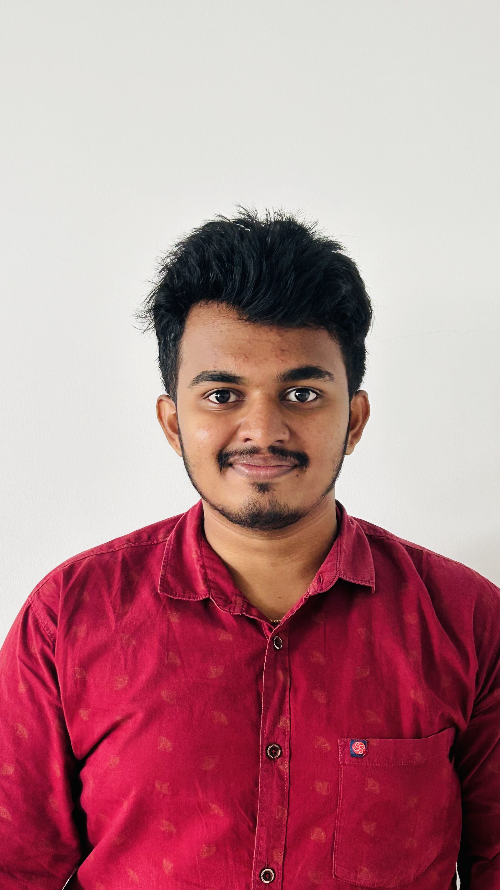

Manikanta Kolla

Summary
I Am A Male Student From Tenali, Andhra Pradesh, India. I Was Born On September 8, 2003. Currently, I Am Pursuing A Bachelor Of Engineering (B.E) Degree In Engineering From SRM University AP. I Am Expected To Graduate In 2025. I Have Not Yet Specified Any Skills, Job Title, Or Employer. However, I Am Eager To Gain Experience And Develop My Professional Profile. I Am Dedicated To My Studies And Committed To Achieving Success In My Chosen Field. I Am Excited About The Opportunities That Lie Ahead And Look Forward To Making A Positive Impact In The Engineering Industry.
Education
10-Dr Kkr gowtham school,Tenali/GPA-9.0
12-Nri Junior College,Tenali/GPA-6.5
Currently-Srm University,A.P/GPA-7.5
Work experience
APSSDC
-Developed and conducted training programs to enhance technical skills of participants
Collaborated with team members to design and implement innovative projects
Assisted in organizing workshops and industry-specific events to promote skill development
Provided support and guidance to participants during training sessions
Contributed to the development of educational materials and learning resources
Assisted in conducting assessments and evaluations to measure the effectiveness of training programs
Worked closely with industry partners to identify skill gaps and develop targeted training programs
Participated in team meetings and provided input to improve processes and strategies
Assisted in managing administrative tasks and maintaining records
Continuously kept up-to-date with industry trends and technological advancements to deliver relevant training content
Mentored and motivated participants to achieve their goals and excel in their chosen fields
UROP
-Gain practical experience in a research-oriented environment
Contribute to ongoing research projects
Learn new research methodologies and techniques
Participate in data analysis and interpretation
Collaborate with fellow researchers
Develop professional relationships with mentors and colleagues
Enhance problem-solving and critical thinking skills through research
Explore potential areas of interest for further academic or professional pursuits
Conduct literature reviews and stay updated with the latest research in the field
Research Intern
-Assisted in conducting research projects at SRM University, AP
Participated in data collection and analysis for ongoing research studies
Contributed to the development of research methods and protocols
Collaborated with a team of researchers to achieve common research goals
Attended research meetings and provided insights and recommendations
Presented findings and research outcomes to colleagues and supervisors
Continuously updated knowledge in the research field through literature reviews
Used various research tools and technologies to collect and analyze data
Provided support for grant applications and research funding proposals
Skills
Awards And Certifications
Achieved A Completion Certification In Research Intern
Other
Hobbies
Contact